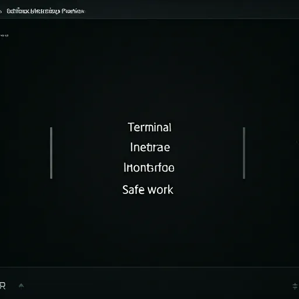

Web Engineering
Web Engineering é o desenvolvimento de sites e sistemas digitais que combinam velocidade, segurança e facilidade de uso, garantindo que funcionem de forma estável, eficiente e preparados para crescer conforme a necessidade.
Neural Architecture Mapping
Criação de fluxos lógicos e estruturais baseados inteiramente no comportamento cognitivo do usuário para uma navegação instintiva.
Quantum-Resistant Coding
Desenvolvimento de código com padrões de segurança avançados, garantindo integridade de dados preparada para as ameaças do futuro.
Algorithmic Optimization
Maximização de conversão através de design orientado por dados precisos e algoritmos de otimização de performance em tempo real.
Protocol Details
Métricas de precisão e engenharia de sistemas
Latência de Renderização
Core de Alta Performance
Nossa arquitetura utiliza processamento paralelo e otimização de ativos em tempo real para garantir que cada interação seja instantânea e fluida.
Criptografia Void
Proteção de dados em nível quântico integrada diretamente no kernel da interface.
Conversão Algorítmica
Design focado em resultados, utilizando análise preditiva para otimizar o fluxo do usuário.
Sincronização de Nós
Rede distribuída que garante redundância e baixa latência em qualquer ponto do planeta.
Integração de Precisão
Mapeamento de Vertices
Estruturação de dados baseada em topologias não-euclidianas para eficiência máxima.
Fluxo de Dados Reativo
Streaming de informações em tempo real com balanceamento de carga inteligente.
Otimização de GPU
Renderização acelerada por hardware para visuais complexos sem perda de frames.
